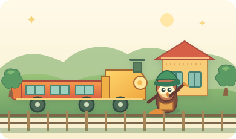
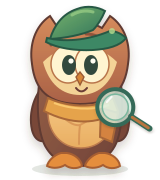

01 首页自己选，今天玩什么
9:41●●● ▰
今日新案件案件 01
星星徽章去哪了？
邮车马上出发，猫头鹰探长需要你的帮忙！
侦选一个地点，开始调查！三个入口都能找到重要线索
每一次学习，都是一次调查。和猫头鹰探长踏上冒险岛，用英语问线索、用数学解机关、沿着时间长河寻找答案。
邮车马上出发，猫头鹰探长需要你的帮忙！


不用说得很完美。探长陪你先说一小句，慢慢来就好。看看每次多了几个。可以画出来，也可以用积木摆一摆。
不用着急，侦探有自己的办法。
选对之后，再讲讲你是怎么发现的。
布局示例 · 节点间距不代表实际时长 · 史料待教材校对
猫头鹰探长说，它就藏在冒险岛上！
找到它，轻轻点一下。
看看孩子正在好奇什么、怎样找到答案。
愿意跟着说问句，还主动换成了“星星徽章”。
发现齿轮每次多一排，试着用积木摆出下一队。
发现不同地方的人都曾用文字留下记录。
“你从哪儿发现这个线索的？”先听孩子讲完，再一起把发现收进探险本。
原型说明：可以点选数学答案、尝试提示、找星星并演示英语反馈；未开启麦克风，也不采集孩子数据。家长证据册为示例记录。侦探故事为虚构，历史知识需在正式版本中按教材及史料核对。未设置排行榜、打卡惩罚或付费奖励。